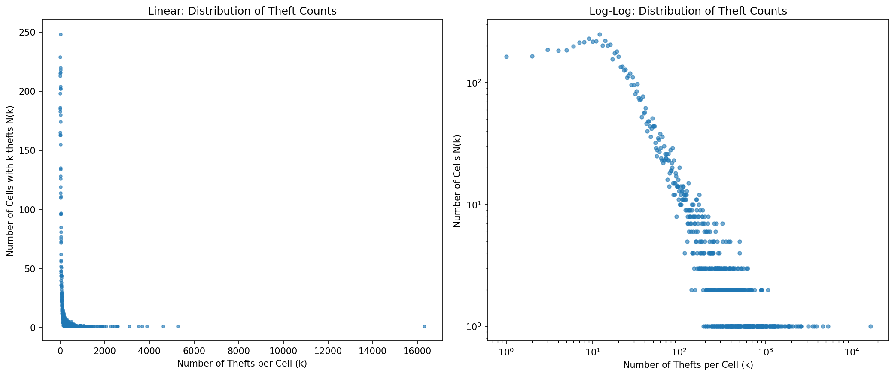

When we look for a place to live, we often rely on simple metrics. We check real estate sites or crime maps that label entire districts as "safe" or "dangerous" based on a single average number. But averages have a nasty habit of hiding the truth.
To see how misleading this can be, I dug into over two decades of incident reports from SF OpenData (2003–Present). By mapping out millions of data points, it became clear that the idea of a uniformly dangerous neighborhood is a myth. Crime doesn't spread like a blanket; it clusters in highly specific, localized ways that challenge how we think about policing and city planning.
1. The Spatial Power Law
Take Larceny Theft—the most common crime in San Francisco. If you average the thefts across a large district like the Mission, the number looks terrible. But when you break the city down into a grid of 100m x 100m squares, a different reality emerges. Most of the grid is completely quiet. In my analysis, the vast majority of blocks had practically zero thefts. Instead, the crime was driven by a handful of extreme outliers—specific corners or parking lots that accounted for thousands of incidents.

This is the problem with relying on an "average" crime rate. If one massive hotspot is dragging up the stats for an entire zip code, treating the whole district as dangerous isn't just statistically wrong—it unfairly stigmatizes the people living on the 99% of blocks that are perfectly safe.
2. The Rhythm of Enforcement
If crime is so concentrated in space, it is equally concentrated in time. Certain crimes march to a very specific, predictable beat. But why? Is it because criminals all coordinate their schedules, or is it because we are actually measuring police behavior?
This interactive heatmap shows that crime doesn't just happen randomly—it follows the rhythms of the city and, more importantly, the rhythms of patrols. Some offenses are essentially "crimes of enforcement." Unlike a stolen car, which gets reported regardless of who is around, a drug offense usually only appears in the dataset if an officer is physically there to make an arrest.
3. The Dirty Data Feedback Loop
This brings us to a dangerous phenomenon in spatial mapping. If an algorithm maps out enforcement-heavy crimes, it doesn't show us where all the crime is happening—it shows us where the police are currently standing.
If a predictive policing algorithm looks at this map, it concludes the Tenderloin is overrun, and commands the department to send more officers there. Those extra officers make more arrests simply by being present, which makes the map glow even redder the following year. As Richardson et al. point out, this is "dirty data." The algorithm isn't predicting new crime; it is just creating a feedback loop that confirms its own bias and artificially inflates the perceived danger of specific neighborhoods.
Conclusion
Data visualization is powerful, but it can easily lie to us if we don't ask the right questions. We cannot rely on neighborhood averages when crime is hyper-concentrated on single street corners. We cannot treat all data points equally when some crimes measure public behavior and others measure police behavior. If we train predictive policing models on historical data without understanding these nuances, we aren't predicting the future—we are just hardcoding the biases of the past.
Sources & Further Reading
- Richardson, Rashida, Jason M. Schultz, and Kate Crawford. "Dirty Data, Bad Predictions: How Civil Rights Violations Impact Police Data." New York University Law Review Online, 2019.
- Data sourced from SF OpenData: Police Department Incident Reports (2003 - Present).
- Segel, Edward, and Jeffrey Heer. "Narrative Visualization: Telling Stories with Data." IEEE Transactions on Visualization and Computer Graphics, 2010.